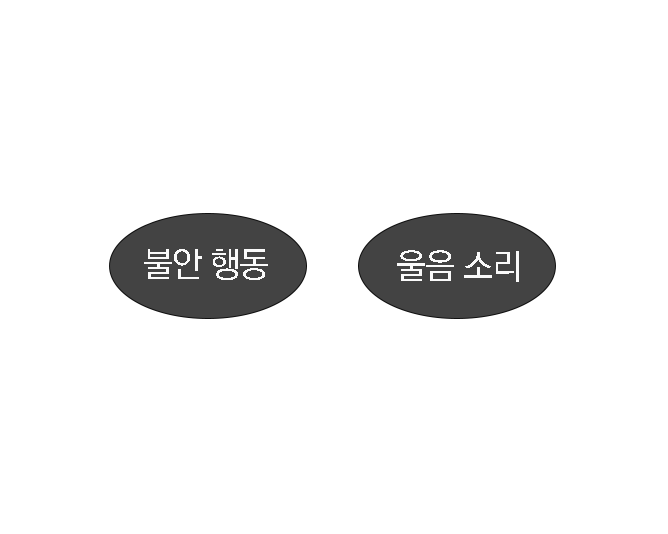
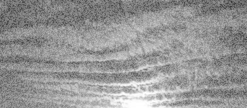
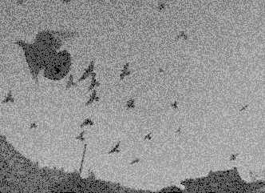

03 초저주파소리들 중에는 파장이 너무 길거나 짧아서 인지하기 어려운 소리가 있다.
인간이 들을 수 있는 소리, 가청음의 범위는 진동수 20 헤르츠(Hz) ~ 20,000 헤르츠(Hz) 사이. 반면 진동수가 20,000 Hz 이상인 소리는 초음파(超音波, supersound),
진동수가 20 Hz 미만인 소리는 초저주파(超低周波, very low frequency[VLF]) 혹은 불가청음(不可聽音, infrasound)라고 한다. 초음파나 초저주파는 귀에는 잘 들리지 않는다.
인간이 들을 수 있는 주파수[1]보다 낮은 주파수(20Hz 이하)를 가지는 소리 혹은 파동이다. 초저음파(超低音波)라고도 한다. 개인 차가 있으며
이어폰을 낀 특수한 상태에서 음량을 키우는 경우 가청음파에 가까운 초저음파는 들을 수 있기도 하다.
초저주파는 화산 활동, 유성 충돌, 토네이도, 태풍 등에 동반하여 발생하므로, 이를 측정하여 자연재해를 관측 또는 전조를 예측하기도 한다.
about
조류와 일부 동물은 진동수 20Hz 미만의 불가청음을 들을 수 있어 수천 ㎞ 밖의 바람과 파도, 화산 폭발도 감지할 수 있는 것으로 보인다.

이상 증상 abnormal symptoms
조류Birds
Nervous
8.21
Running away
-2.62
Group behavior
-10.21
Crying
4.80
Exited
1.38
Misc
0.61
Slow to react
-3.23
Eating
0.54

about
조류(Birds)는 울음소리(Crying)와 흥분행동(Excited), 파충류(Reptiles)는 겨울잠에서 깨어남(Waking up from hibernation)과 같은 불안행동(Nervous)을 보임을 알 수 있다.

이상 증상 - 목격시기
Just before
Slow to react
Crying
1-day — 6-day
Crying
Group behavior
조류(Bird)에서는 직전(Just before) 및 수일 전에 울음소리(Crying), 1일(1-day)전 집단행동(Group behavior) 관련 이상행동이 두드러지게 목격됨을 알 수 있다.